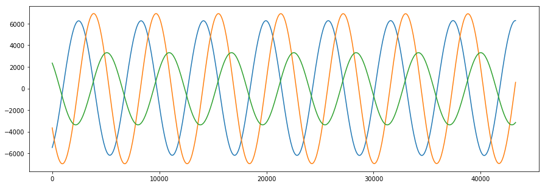
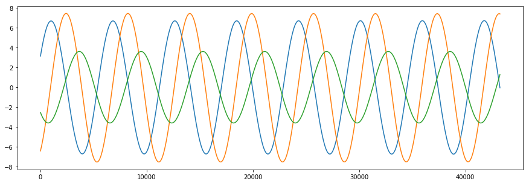

Propagation with the GMAT API¶
This document walks you through the configuration and use of the GMAT API for propagation.
Prepare the GMAT Environment¶
Before the API can be used, it needs to be loaded into the Python system and initialized using a GMAT startup file. This can be done from the GMAT bin folder by importing the gmatpy module, but using that approach tends to leave pieces in the bin folder that may annoy other users. Running from an outside folder takes a few steps, which have been captured in the run_gmat.py file imported here:
from run_gmat import *
Configure a Spacecraft¶
We’ll need an object to propagate. Here’s a basic one:
sat = gmat.Construct("Spacecraft","LeoSat")
sat.SetField("DateFormat", "UTCGregorian")
sat.SetField("Epoch", "27 Sep 2019 15:05:00.000")
sat.SetField("CoordinateSystem", "EarthMJ2000Eq")
sat.SetField("DisplayStateType", "Keplerian")
sat.SetField("SMA", 7005)
sat.SetField("ECC", 0.008)
sat.SetField("INC", 28.5)
sat.SetField("RAAN", 75)
sat.SetField("AOP", 90)
sat.SetField("TA", 45)
sat.SetField("DryMass", 50)
sat.SetField("Cd", 2.2)
sat.SetField("Cr", 1.8)
sat.SetField("DragArea", 1.5)
sat.SetField("SRPArea", 1.2)
Configure the Forces¶
Next we’ll set up a force model. For this example, we’ll use an Earth 8x8 potential model, with Sun and Moon point masses and Jacchia-Roberts drag. In GMAT, forces are collected in the ODEModel class. That class is scripted as a “ForceModel” in the script language. The API accepts either. The force model is built and its (empty) contents displayed using
fm = gmat.Construct("ForceModel", "TheForces")
fm.Help()
ForceModel TheForces
Field Type Value
--------------------------------------------------------
CentralBody Object Earth
PrimaryBodies ObjectArray {}
PolyhedralBodies ObjectArray {}
PointMasses ObjectArray {}
Drag Object None
SRP OnOff Off
RelativisticCorrection OnOff Off
ErrorControl List RSSStep
UserDefined ObjectArray {}
''
Add the Potential Field¶
In this example, the spacecraft is in Earth orbit. The largest force for the model is the Earth gravity field. We’ll set it to an 8x8 field and add it to the force model using the code
# An 8x8 JGM-3 Gravity Model
earthgrav = gmat.Construct("GravityField")
earthgrav.SetField("BodyName","Earth")
earthgrav.SetField("Degree",8)
earthgrav.SetField("Order",8)
earthgrav.SetField("PotentialFile","JGM2.cof")
# Add forces into the ODEModel container
fm.AddForce(earthgrav)
Add the other forces¶
Next we’ll build and add the Sun, Moon, and Drag forces, and then show the completed force model.
# The Point Masses
moongrav = gmat.Construct("PointMassForce")
moongrav.SetField("BodyName","Luna")
sungrav = gmat.Construct("PointMassForce")
sungrav.SetField("BodyName","Sun")
# Drag using Jacchia-Roberts
jrdrag = gmat.Construct("DragForce")
jrdrag.SetField("AtmosphereModel","JacchiaRoberts")
# Build and set the atmosphere for the model
atmos = gmat.Construct("JacchiaRoberts")
jrdrag.SetReference(atmos)
# Add all of the forces into the ODEModel container
fm.AddForce(moongrav)
fm.AddForce(sungrav)
fm.AddForce(jrdrag)
fm.Help()
ForceModel TheForces
Field Type Value
--------------------------------------------------------
CentralBody Object Earth
PrimaryBodies ObjectArray {Earth}
PolyhedralBodies ObjectArray {}
PointMasses ObjectArray {Luna, Sun}
Drag Object JacchiaRoberts
SRP OnOff Off
RelativisticCorrection OnOff Off
ErrorControl List RSSStep
UserDefined ObjectArray {}
In GMAT, the force model scripting shows the settings for each force. In the API, you can examine the settings for the individual forces:
earthgrav.Help()
GravityField
Field Type Value
--------------------------------------------------------
Degree Integer 8
Order Integer 8
StmLimit Integer 100
PotentialFile Filename JGM2.cof
TideFile Filename
TideModel String None
or, with a little work, the scripting for the complete force model:
print(fm.GetGeneratingString(0))
Create ForceModel TheForces;
GMAT TheForces.CentralBody = Earth;
GMAT TheForces.PrimaryBodies = {Earth};
GMAT TheForces.PointMasses = {Luna, Sun};
GMAT TheForces.SRP = Off;
GMAT TheForces.RelativisticCorrection = Off;
GMAT TheForces.ErrorControl = RSSStep;
GMAT TheForces.GravityField.Earth.Degree = 8;
GMAT TheForces.GravityField.Earth.Order = 8;
GMAT TheForces.GravityField.Earth.StmLimit = 100;
GMAT TheForces.GravityField.Earth.PotentialFile = 'JGM2.cof';
GMAT TheForces.GravityField.Earth.TideModel = 'None';
GMAT TheForces.Drag.AtmosphereModel = JacchiaRoberts;
GMAT TheForces.Drag.HistoricWeatherSource = 'ConstantFluxAndGeoMag';
GMAT TheForces.Drag.PredictedWeatherSource = 'ConstantFluxAndGeoMag';
GMAT TheForces.Drag.CSSISpaceWeatherFile = 'SpaceWeather-All-v1.2.txt';
GMAT TheForces.Drag.SchattenFile = 'SchattenPredict.txt';
GMAT TheForces.Drag.F107 = 150;
GMAT TheForces.Drag.F107A = 150;
GMAT TheForces.Drag.MagneticIndex = 3;
GMAT TheForces.Drag.SchattenErrorModel = 'Nominal';
GMAT TheForces.Drag.SchattenTimingModel = 'NominalCycle';
GMAT TheForces.Drag.DragModel = 'Spherical';
Configure the Integrator¶
Finally, in order to propagate, we need an integrator. For this example, we’ll use a Prince-Dormand 7(8) Runge-Kutta integrator. The propagator is set using the code
# Build the propagation container that connect the integrator, force model, and spacecraft together
pdprop = gmat.Construct("Propagator","PDProp")
# Create and assign a numerical integrator for use in the propagation
gator = gmat.Construct("PrinceDormand78", "Gator")
pdprop.SetReference(gator)
# Set some of the fields for the integration
pdprop.SetField("InitialStepSize", 60.0)
pdprop.SetField("Accuracy", 1.0e-12)
pdprop.SetField("MinStep", 0.0)
Connect the Objects Together¶
# Assign the force model imported from BasicFM
pdprop.SetReference(fm)
# Setup the spacecraft that is propagated
psm = pdprop.GetPropStateManager()
psm.SetObject(sat)
True
Initialize the System and Propagate a Step¶
Finally, the system can be initialized and fired to see a single propagation step. Some of the code displayed here will be folded into the API’s Initialize() function. For now, the steps needed to initialize the system for a propagation step are:
# Perform top level initialization
gmat.Initialize()
# Refresh the object references from the propagator clones
fm = pdprop.GetODEModel()
gator = pdprop.GetPropagator()
psm.BuildState()
# Pass the state manager to the dynamics model
fm.SetPropStateManager(psm)
fm.SetState(psm.GetState())
# Assemble all of the force model objects together
fm.Initialize()
# Finish the force model setup
fm.BuildModelFromMap()
fm.UpdateInitialData()
# Initialize the Propagator components
pdprop.Initialize()
gator.Initialize()
True
Note
Alternatively, the above code can be replaced with a call to the PrepareInternals() function on the propagator. This also removes the need to manually configure the PropagationStateManager. The condensed code can be seen below:
# Perform top level initialization
gmat.Initialize()
# Setup the spacecraft that is propagated
pdprop.AddPropObject(sat)
pdprop.PrepareInternals()
# Refresh the object references from the propagator clones
fm = pdprop.GetODEModel()
gator = pdprop.GetPropagator()
and we can then propagate, and start accumulating the data
# Take a 60 second step, showing the state before and after, and start buffering
# Buffers for the data
time = []
pos = []
vel = []
gatorstate = gator.GetState()
t = 0.0
r = []
v = []
for j in range(3):
r.append(gatorstate[j])
v.append(gatorstate[j+3])
time.append(t)
pos.append(r)
vel.append(v)
print("Starting state: ", t, r, v)
# Take a step and buffer it
gator.Step(60.0)
gatorstate = gator.GetState()
t = t + 60.0
r = []
v = []
for j in range(3):
r.append(gatorstate[j])
v.append(gatorstate[j+3])
time.append(t)
pos.append(r)
vel.append(v)
print("Propped state: ", t, r, v)
Starting state: 0.0 [-5455.495852919224, -3637.0485868833093, 2350.0571814448517] [3.1318014092807545, -6.423940627548709, -2.545227573417657]
Propped state: 60.0 [-5256.1378692623475, -4014.4902800853415, 2192.4488937848546] [3.51104729424038, -6.153042432990329, -2.7064897093764597]
Finally, we can run for a few orbits and show the results
for i in range(360):
# Take a step and buffer it
gator.Step(60.0)
gatorstate = gator.GetState()
t = t + 60.0
r = []
v = []
for j in range(3):
r.append(gatorstate[j])
v.append(gatorstate[j+3])
time.append(t)
pos.append(r)
vel.append(v)
import matplotlib.pyplot as plt
plt.rcParams['figure.figsize'] = (15, 5)
plt.plot(time, pos)
plt.show()
plt.plot(time, vel)
plt.show()

